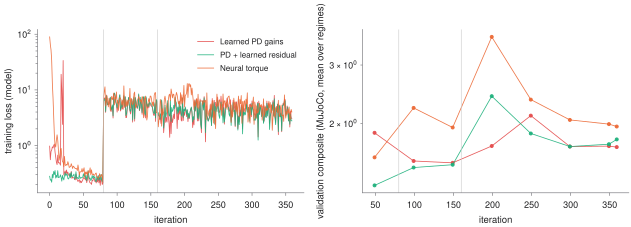

Can controllers trained by backpropagation through a known differentiable model of the robot capture the headroom measured in Milestone 1 when they are evaluated in the plant under identical references, torque limits and cases? Three parameterizations are compared under one objective and one training protocol: learned PD gains (a network sets per-joint stiffness and damping around gravity compensation), PD + residual (a bounded residual torque on the shared-tuned PD), and neural torque (the network outputs the torque). Secondary questions: how large is the gap between performance in the training model and in the plant, and how do the controllers degrade on references faster than the training distribution?
Known model, contact approximation, loss and training protocol are in ADR 0003; rates, latency and observations in ADR 0002. The learned part of every controller runs at 100 Hz with 5 ms compute latency and sees the measured state, the current reference and a 100 ms history of positions, velocities and applied torques; the fast loop (1 kHz in the plant, 400 Hz in the model) applies held gains or a held residual, or the held torque. Baselines are the Milestone 1 PD with shared gains (same information minus the history), the per-regime gains (condition-aware reference, assumes the regime is known) and computed torque (privileged, smooth references only). Training references are drawn from the train split, checkpoints are selected on the val split in the plant, results are reported on the test split (16 cases per regime), paired by case.
Initialization: learned gains start at 15 rad/s natural frequency and unit damping ratio on every joint, PD + residual starts at the shared PD exactly (zero residual), and neural torque is initialized by imitating the hand-set initial PD of Milestone 1 on closed-loop states (3000 supervised steps), because a zero-torque start collapses the arm. Neural torque therefore starts from a weaker controller than the other two.
One seed per parameterization in this first pass (compute budget of the day); more seeds are queued. Training loss is measured in the model, the validation composite in the plant on 12 fixed cases every 50 iterations. Stage changes (adding step targets, then contact) raise the loss by construction.

Protocol v1 training (no disturbances in the training windows, 320 iterations of 16 windows). Checkpoints are the best validation composite per run: learned gains at iteration 249, PD + residual at iteration 49 (end of the first curriculum stage), neural torque at iteration 49. The later checkpoints of the residual and neural-torque runs scored worse on validation, which is part of the evidence below.
| Controller | Seed | Hold | Smooth tracking | Policy-like targets (20 Hz hold) | Step targets | Sustained contact | Contact transitions | Diverged cases |
|---|---|---|---|---|---|---|---|---|
| Learned PD gains | 0 | 1.06 | 0.32 | 0.74 | 2.47 | 2.54 | 2.35 | 0 |
| PD + learned residual | 0 | 0.43 | 0.17 | 1.21 | 1.98 | 2.05 | 2.29 | 0 |
| Neural torque | 0 | 0.93 | 0.43 | 0.97 | 2.20 | 3.87 | 2.12 | 0 |
| PD, shared gains | — | 0.51 | 0.18 | 1.21 | 2.00 | 1.98 | 2.30 | 0 |
| PD, gains tuned per regime | — | 0.22 | 0.09 | 0.56 | 1.88 | 1.70 | 1.38 | 0 |
| Computed torque (privileged) | — | 0.28 | 0.05 | 2.04 | 12.78 | 7.29 | 5.09 | 0 |
| Regime | Metric | PD, shared gains | PD, gains tuned per regime | Computed torque (privileged) | Learned PD gains | PD + learned residual | Neural torque |
|---|---|---|---|---|---|---|---|
| Hold | Position RMSE (rad) | 0.000574 | 0.000256 (-0.00032*) | 0.000298 (-0.00028*) | 0.00121 (0.00063*) | 0.000557 (-1.8e-05) | 0.00178 (0.0012*) |
| Hold | Peak deflection under 10 N pulse (m) | 0.00443 | 0.00177 (-0.0027*) | 0.00232 (-0.0021*) | 0.00932 (0.0049*) | 0.00347 (-0.00096*) | 0.00553 (0.0011*) |
| Smooth tracking | Position RMSE (rad) | 0.00266 | 0.000923 (-0.0017*) | 0.000187 (-0.0025*) | 0.00528 (0.0026*) | 0.00171 (-0.00095*) | 0.00344 (0.00078*) |
| Smooth tracking | Torque rate RMS (Nm/s) | 48.4 | 41.6 (-6.8*) | 41.7 (-6.7*) | 56 (7.7*) | 81 (33*) | 263 (2.1e+02*) |
| Policy-like targets (20 Hz hold) | Position RMSE (rad) | 0.0145 | 0.0156 (0.0011) | 0.00623 (-0.0083*) | 0.0112 (-0.0033*) | 0.0142 (-0.0003*) | 0.0293 (0.015*) |
| Policy-like targets (20 Hz hold) | Torque rate RMS (Nm/s) | 2.31e+03 | 619 (-1.7e+03*) | 4.79e+03 (2.5e+03*) | 1.29e+03 (-1e+03*) | 2.32e+03 (6.4*) | 957 (-1.4e+03*) |
| Step targets | Position RMSE (rad) | 0.0303 | 0.03 (-0.00027*) | 0.362 (0.33*) | 0.0304 (0.00016) | 0.0301 (-0.00017*) | 0.037 (0.0067*) |
| Step targets | Settling time after step (s) | 0.157 | 0.124 (-0.033*) | 0.733 (0.58*) | 0.263 (0.11*) | 0.145 (-0.012*) | 0.269 (0.11*) |
| Step targets | Torque rate RMS (Nm/s) | 2.02e+03 | 2.07e+03 (50*) | 2.77e+03 (7.5e+02*) | 1.85e+03 (-1.7e+02*) | 2.05e+03 (30*) | 1.4e+03 (-6.2e+02*) |
| Sustained contact | Tangential tool error during slide (m) | 0.00712 | 0.00576 (-0.0014*) | 0.0226 (0.016*) | 0.00884 (0.0017*) | 0.00691 (-0.00021*) | 0.00772 (0.0006*) |
| Sustained contact | Normal force std in contact phase (N) | 6.25 | 5.55 (-0.69*) | 24.6 (18*) | 7.22 (0.97*) | 6.72 (0.48*) | 9.22 (3*) |
| Sustained contact | Contact losses of 5 ms or more during contact phase (-) | 0.125 | 0 (-0.12) | 1.44 (1.3*) | 4.12 (4*) | 0 (-0.12) | 23.8 (24*) |
| Contact transitions | Peak normal force (N) | 91.8 | 31.7 (-60*) | 179 (87*) | 88.3 (-3.6) | 89.9 (-1.9*) | 67.7 (-24*) |
| Contact transitions | Impulse in first 100 ms of contact (N s) | 6.46 | 0.852 (-5.6*) | 7.65 (1.2*) | 4.57 (-1.9*) | 6.26 (-0.19*) | 4.16 (-2.3*) |
| Contact transitions | Tracking recovery after release (s) | 0.0428 | 0.0578 (0.015*) | 0.103 (0.061*) | 0.0506 (0.0078*) | 0.0413 (-0.0015*) | 0.0651 (0.022*) |
| Contact transitions | Position RMSE (rad) | 0.0061 | 0.00876 (0.0027*) | 0.0174 (0.011*) | 0.0061 (-2.9e-06) | 0.00596 (-0.00014*) | 0.008 (0.0019*) |
The same controllers evaluated inside the torch model they were trained in. In free space (smooth, policy-like and step targets) model and plant composites agree within about 20%, so the free-space shortfall below is not model mismatch. In contact the plant is consistently harder than the model (for example sustained contact: 1.4 against 2.5 for learned gains, 1.7 against 3.9 for neural torque), and neural torque loses contact 24 times per sustained-contact case in the plant against 0 for PD: the penalty contact does not reproduce the plant's stick-slip under a torque that steps every 10 ms. The hold composite in the model is evaluated with the same 10 N pulse as in the plant.
| Controller | Seed | Regime | Composite in model | Composite in MuJoCo | Position RMSE in model (rad) | Position RMSE in MuJoCo (rad) |
|---|---|---|---|---|---|---|
| Learned PD gains | 0 | Hold | 0.00 | 1.06 | 2.139e-08 | 0.001208 |
| Learned PD gains | 0 | Smooth tracking | 0.31 | 0.32 | 0.005115 | 0.005276 |
| Learned PD gains | 0 | Policy-like targets (20 Hz hold) | 0.52 | 0.74 | 0.01065 | 0.01122 |
| Learned PD gains | 0 | Step targets | 2.16 | 2.47 | 0.02959 | 0.03045 |
| Learned PD gains | 0 | Sustained contact | 1.43 | 2.54 | 0.005334 | 0.005405 |
| Learned PD gains | 0 | Contact transitions | 2.22 | 2.35 | 0.005666 | 0.006099 |
| PD + learned residual | 0 | Hold | 0.04 | 0.43 | 0.0002835 | 0.0005567 |
| PD + learned residual | 0 | Smooth tracking | 0.15 | 0.17 | 0.001781 | 0.001708 |
| PD + learned residual | 0 | Policy-like targets (20 Hz hold) | 0.84 | 1.21 | 0.01358 | 0.01422 |
| PD + learned residual | 0 | Step targets | 1.67 | 1.98 | 0.02927 | 0.03011 |
| PD + learned residual | 0 | Sustained contact | 1.24 | 2.05 | 0.004899 | 0.004969 |
| PD + learned residual | 0 | Contact transitions | 2.18 | 2.29 | 0.00528 | 0.005961 |
| Neural torque | 0 | Hold | 0.27 | 0.93 | 0.001489 | 0.001778 |
| Neural torque | 0 | Smooth tracking | 0.33 | 0.43 | 0.003514 | 0.00344 |
| Neural torque | 0 | Policy-like targets (20 Hz hold) | 0.81 | 0.97 | 0.02891 | 0.02933 |
| Neural torque | 0 | Step targets | 1.96 | 2.20 | 0.03639 | 0.03699 |
| Neural torque | 0 | Sustained contact | 1.70 | 3.87 | 0.005272 | 0.005489 |
| Neural torque | 0 | Contact transitions | 2.06 | 2.12 | 0.007618 | 0.008002 |
References 1.5 and 2 times faster than the training distribution. No controller diverged. The learned controllers degrade at the same rate as the shared PD; the residual controller keeps its smooth-tracking advantage at both scales, neural torque's policy-like-target advantage persists, and learned gains remain worse on smooth tracking.
| Speed scale | Regime | PD, shared gains | Learned PD gains | PD + learned residual | Neural torque |
|---|---|---|---|---|---|
| x1.5 | Smooth tracking | 0.0054 / 0.39 / 0 | 0.0114 / 0.71 / 0 | 0.0038 / 0.37 / 0 | 0.0072 / 0.87 / 0 |
| x1.5 | Policy-like targets (20 Hz hold) | 0.0204 / 1.63 / 0 | 0.0189 / 1.07 / 0 | 0.0196 / 1.62 / 0 | 0.0374 / 1.25 / 0 |
| x1.5 | Step targets | 0.0528 / 2.72 / 0 | 0.0530 / 3.13 / 0 | 0.0528 / 2.69 / 0 | 0.0614 / 3.12 / 0 |
| x1.5 | Sustained contact | 0.0048 / 3.09 / 0 | 0.0051 / 4.04 / 0 | 0.0047 / 3.07 / 0 | 0.0052 / 4.94 / 0 |
| x1.5 | Contact transitions | 0.0066 / 3.92 / 0 | 0.0068 / 4.18 / 0 | 0.0066 / 4.33 / 0 | 0.0088 / 4.11 / 0 |
| x2.0 | Smooth tracking | 0.0087 / 0.62 / 0 | 0.0163 / 1.03 / 0 | 0.0073 / 0.65 / 0 | 0.0133 / 1.39 / 0 |
| x2.0 | Policy-like targets (20 Hz hold) | 0.0245 / 1.89 / 0 | 0.0236 / 1.30 / 0 | 0.0233 / 1.88 / 0 | 0.0434 / 1.44 / 0 |
| x2.0 | Step targets | 0.0667 / 3.04 / 0 | 0.0676 / 3.61 / 0 | 0.0667 / 3.03 / 0 | 0.0778 / 3.59 / 0 |
| x2.0 | Sustained contact | 0.0047 / 3.95 / 0 | 0.0049 / 4.65 / 0 | 0.0046 / 3.93 / 0 | 0.0052 / 5.24 / 0 |
| x2.0 | Contact transitions | 0.0069 / 5.31 / 0 | 0.0072 / 5.69 / 0 | 0.0070 / 6.36 / 0 | 0.0092 / 6.36 / 0 |
Protocol v2 (ADR 0003 amendment): the same 10 N, 0.2 s pulse as in the hold regime is applied in 30% of the training windows, batch 24 instead of 16, 360 instead of 320 iterations; everything else unchanged. One seed per parameterization. Best validation checkpoints: learned gains at iteration 149, PD + residual and neural torque at iteration 49.
| Controller | Seed | Hold | Smooth tracking | Policy-like targets (20 Hz hold) | Step targets | Sustained contact | Contact transitions | Diverged cases |
|---|---|---|---|---|---|---|---|---|
| Learned PD gains | 0 | 0.84 | 0.26 | 0.89 | 2.46 | 2.72 | 2.29 | 0 |
| PD + learned residual | 0 | 0.41 | 0.17 | 1.21 | 1.99 | 1.97 | 2.27 | 0 |
| Neural torque | 0 | 0.88 | 0.43 | 0.99 | 2.23 | 3.44 | 2.14 | 0 |
| PD, shared gains | — | 0.51 | 0.18 | 1.21 | 2.00 | 1.98 | 2.30 | 0 |
| PD, gains tuned per regime | — | 0.22 | 0.09 | 0.56 | 1.88 | 1.70 | 1.38 | 0 |
| Computed torque (privileged) | — | 0.28 | 0.05 | 2.04 | 12.78 | 7.29 | 5.09 | 0 |
| Regime | Metric | PD, shared gains | PD, gains tuned per regime | Computed torque (privileged) | Learned PD gains | PD + learned residual | Neural torque |
|---|---|---|---|---|---|---|---|
| Hold | Position RMSE (rad) | 0.000574 | 0.000256 (-0.00032*) | 0.000298 (-0.00028*) | 0.000966 (0.00039*) | 0.000538 (-3.6e-05) | 0.00166 (0.0011*) |
| Hold | Peak deflection under 10 N pulse (m) | 0.00443 | 0.00177 (-0.0027*) | 0.00232 (-0.0021*) | 0.00731 (0.0029*) | 0.00323 (-0.0012*) | 0.00521 (0.00078*) |
| Smooth tracking | Position RMSE (rad) | 0.00266 | 0.000923 (-0.0017*) | 0.000187 (-0.0025*) | 0.00393 (0.0013*) | 0.00158 (-0.0011*) | 0.00344 (0.00078*) |
| Smooth tracking | Torque rate RMS (Nm/s) | 48.4 | 41.6 (-6.8*) | 41.7 (-6.7*) | 60.3 (12*) | 91 (43*) | 260 (2.1e+02*) |
| Policy-like targets (20 Hz hold) | Position RMSE (rad) | 0.0145 | 0.0156 (0.0011) | 0.00623 (-0.0083*) | 0.00954 (-0.005*) | 0.0144 (-0.00015) | 0.0298 (0.015*) |
| Policy-like targets (20 Hz hold) | Torque rate RMS (Nm/s) | 2.31e+03 | 619 (-1.7e+03*) | 4.79e+03 (2.5e+03*) | 1.76e+03 (-5.5e+02*) | 2.32e+03 (6.9*) | 978 (-1.3e+03*) |
| Step targets | Position RMSE (rad) | 0.0303 | 0.03 (-0.00027*) | 0.362 (0.33*) | 0.0301 (-0.00014) | 0.0301 (-0.00017*) | 0.037 (0.0068*) |
| Step targets | Settling time after step (s) | 0.157 | 0.124 (-0.033*) | 0.733 (0.58*) | 0.233 (0.076*) | 0.147 (-0.0097*) | 0.277 (0.12*) |
| Step targets | Torque rate RMS (Nm/s) | 2.02e+03 | 2.07e+03 (50*) | 2.77e+03 (7.5e+02*) | 2e+03 (-18) | 2.06e+03 (38*) | 1.4e+03 (-6.2e+02*) |
| Sustained contact | Tangential tool error during slide (m) | 0.00712 | 0.00576 (-0.0014*) | 0.0226 (0.016*) | 0.00935 (0.0022*) | 0.00684 (-0.00028*) | 0.00813 (0.001*) |
| Sustained contact | Normal force std in contact phase (N) | 6.25 | 5.55 (-0.69*) | 24.6 (18*) | 8.71 (2.5*) | 6.34 (0.09) | 9.27 (3*) |
| Sustained contact | Contact losses of 5 ms or more during contact phase (-) | 0.125 | 0 (-0.12) | 1.44 (1.3*) | 0.688 (0.56) | 0 (-0.12) | 14.3 (14*) |
| Contact transitions | Peak normal force (N) | 91.8 | 31.7 (-60*) | 179 (87*) | 88.5 (-3.3) | 87.4 (-4.5*) | 68 (-24*) |
| Contact transitions | Impulse in first 100 ms of contact (N s) | 6.46 | 0.852 (-5.6*) | 7.65 (1.2*) | 5.31 (-1.1*) | 6.03 (-0.43*) | 4.16 (-2.3*) |
| Contact transitions | Tracking recovery after release (s) | 0.0428 | 0.0578 (0.015*) | 0.103 (0.061*) | 0.053 (0.01*) | 0.0459 (0.0031*) | 0.0686 (0.026*) |
| Contact transitions | Position RMSE (rad) | 0.0061 | 0.00876 (0.0027*) | 0.0174 (0.011*) | 0.00611 (3.4e-06) | 0.00626 (0.00016*) | 0.00805 (0.002*) |
Two passes (protocols v1 and v2) agree on the diagnosis: training through the known model fails where the model is wrong (contact) and the curriculum carries that failure into the other regimes. The next intervention is therefore on the contact side, in order of cost: (1) stop the gradient through the contact model's normal force and treat contact windows as domain-randomized disturbances (penalty stiffness, friction and stick-slip-like force noise sampled per window); (2) train per-regime heads or a regime-conditioned policy so that contact training cannot degrade free-space behaviour; (3) use the learned model of Milestone 4, which saw plant contact data, for the contact stage; (4) add actuation delay to the nominal plant as Milestone 3 requires. Seeds are the first purchase with more compute. Milestones 3 to 6 were run with the protocol v1 controllers and are internally consistent.